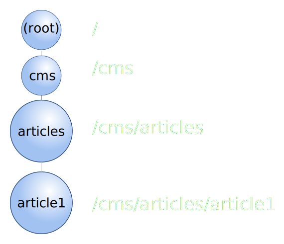
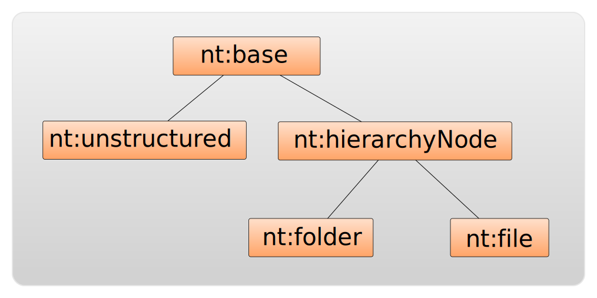

PHPCR
PHP Content Repository - Une Introduction
Par Daniel Leech / @dantleech
Qu'est-ce que c'est PHPCR?
C'est:
- PHP
- Content
- Repository
Et une Content Repository?
Une repositorie de contenu est une de:
- Entrepôt de contenu digitale
- Une API pour le gestion, recherche et methods d'accés et de modification de contenu
- La façade d'une couche consacre à le stockage et gestion de contenu
Qu'est que je peux metre dans une repositorie de contenu?
- Donne structurée (nodes avec properties et enfants)
- Donne binaire (image, video, pdf, etc)
Filesystems
- Bon pour le stockage de fichiers (quelle suprise)
- Mauvaise pour le stockage de donne structurisé
- Mauvaise pour l'integrité des donnes
- Super bien pour le stockage des donnes en hierarchie
RDBMS (e.g. MySQL)
- Bon pour le stockage de donne structurée
- Excellente pour le integrité des donnes
- Pas bon pour le stockage de fichiers
- Mauvaise pour le stockage des donnes en hierachié
- Mauvaise pour le stockage des donnes pas structurée
Content Repository

PHPCR <=> JCR
- PHPCR est une implementation de le specification JCR - Java Content Repository
JCR!
Le specification
- JCR 283 Content Repository Specification (2010)
- 277 pages!
- Basé sur JCR-170 Specification (2005)
- Crée par Day Software (maintenant Adobe)
Overview très vite
- Repository Model
- Connecting
- Reading
- Query
- Export
- Node Type Discovery
- Permissions and Capabilities
- Writing
- Import
- Observation
- Workspace Management
Overview très vite
- Shareable Nodes
- Versioning
- Access Control Management
- Lifecycle Management
- Node Type Management
- Retention and Hold
- Transactions
- Same-name siblings
- Orderable Child Nodes
- Repository Compliance
Il y a beaucoup des choses!
Points saillant
- Stocker les donnes dans une arbre (modele hierarchique)
- Faire les references entre les nodes (modele réseau)
- Faire du versioning
- Avoir plusieurs espaces du travail (staging / production)
- Query - avec une globale full-text search
PHPCR
Une implementation de JCR en PHP
- Premier commit Feb 04 2008
- C'est largement une implementation exacte
- Mais il y a les petite changements
Comment ça fonctionne?
Exemple Jackalope DBAL
// chaque implementation doit fournir une repository factory
$factory = new \Jackalope\RepositoryFactoryDoctrineDBAL();
$repository = $factory->getRepository();
$credentials = new \PHPCR\SimpleCredentials('admin', 'mypassword');
$session = $repository->login($credentials);
$node = $session->getNode('/hello');
// profit
$children = $node->getNodes(); // return children nodes
foreach ($children as $child) {
$string = $child->getProperty('world');
echo $string;
}
Exemple Jackalope Jackrabbit
// chaque implementation doit fournir une repository factory
$factory = new \Jackalope\RepositoryFactoryJackrabbit();
$repository = $factory->getRepository();
$credentials = new \PHPCR\SimpleCredentials('admin', 'mypassword');
$session = $repository->login($credentials);
$node = $session->getNode('/hello');
// encore de profit
$children = $node->getNodes(); // return children nodes
foreach ($children as $child) {
$string = $child->getProperty('world');
echo $string;
}
RepositoryFactoryJackDoctrineDbal
vs
RepositoryFactoryJackrabbit
Tout le reste est pareil!
The Repository Model
Le Session
- Le API session est le interface primaire de le repositorie
- Les operations sont deferred jus'que une appel au method
$session->save()(comme le Doctrine ORMs$em->flush())
Le Session
// rename a node
$session->move('/foobar', '/barfoo');
// retrieve the node
$node = $session->getNode('/barfoo');
// save the session (persist)
$session->save();
Workspaces
- Une workspace contient une graph des nodes
- C'est possible d'avoir pluseiurs workspaces
- Nodes pourrait être cloné entre les workspaces
- Il y a une semblance avec le concepte de branches en GIT
Workspaces
Exemple de usage: Sandbox / Production
- Les utilisateurs pourrait faire leur modifications dans une workspace "sandbox"
- Quand les modifications sont fait, ils peuvent publier leur modifications vers l'environment de production
Nodes and Properties
- Chaque node est attribué d'une path
- Nodes contenient les properties
- Il y a les properties système
- Et les properties normale
- Properties peut utiliser les nomspaces
Nodes and Properties
/
node1/
| - foobar = barfoo
| - barfoo = foobar
| ChildNode1/
| ChildNode2/
article/
- title: Titre de mon article
- content: Ceci est le contenu de mon article
- tags: [ tag1, tag2, tag3 ]
comments/
comment1/
Nodes and Properties
/
node1/
| - jcr:primaryType = nt:unstructured
| - jcr:uuid = 842e61c0-09ab-42a9-87c0-308ccc90e6f4
| - jcr:mixinTypes = [ mix:referenceable ]
| - foobar = barfoo
| - barfoo = foobar
| ChildNode1/
| ChildNode2/
article/
- jcr:primaryType = mon_type_article
- jcr:mixinTypes = [ mix:versionable, mix:lastModified ]
- title: Titre de mon article
- content: Ceci est le contenu de mon article
- tags: [ tag1, tag2, tag3 ]
comments/
comment1/
Node Paths
References
- Nodes peut être "referenceable"
- Vous pouvez ajouter le mixin
mixin:referenceable - Les nodes referencable sont attribué une Universally Unique Identifier (UUID)
- Ils pourais être referencé par peu importe quelles autres nodes
- Dans une manière "strong" ou "weak" (integrete referentiale)
References
- Exemple - catégoriés
- Vous pouvez faire une lien avec une catégorié avec peu importe quelle node
- e.g. une article, une produit, une formulaire
- Brèf, si un node est referencable, il est refenceable par tout
- Parceque il est attribué une UUID
Node Types
- Chaque node a un type primarire
- Node Type <=> Schema
- Node types sont héritable
- Ils héritent tous de le type nt:base
Node Types
Node Types
- Declarer que une propertie est requis
- Declarer que une certaine enfant est requis
- Spcifier que une propertié doit être creer automatiquement
- Enforcer le type d'une propertié
- Specifier si une properté peut avoir plusieurs valeurs
- Elles sont analogues à notion de
Classen PHP
Node Types
- Sont typiquement definé avec les fichers "CND"
CND - Compact Node Type Definition
Une "domain specific language" (DSL) pour le deifinition de node types
Quelques node types de defaut
nt:base
Le node du minimum
[nt:base]
- jcr:primaryType (NAME) autocreated mandatory protected COMPUTE
- jcr:mixinTypes (NAME) autocreated mandatory protected multiple COMPUTE
nt:unstructured
Le node du maximum
[nt:unstructured] > nt:base
orderable
- * (UNDEFINED)
- * (UNDEFINED) multiple
+ * = nt:unstructured multiple VERSION
nt:resource
Pour stocker les binaires avec le metadata ..
[nt:resource] > mix:referenceable
- jcr:encoding (STRING)
- jcr:mimeType (STRING) mandatory
- jcr:data (BINARY) mandatory primary
- jcr:lastModified (DATE) mandatory IGNORE
Mixins
- Permet une genre d'heritage multiple
- Elles sont analogues à notion de
Traiten PHP
Mixins
- nt:title
- nt:lastModified
- nt:created
- nt:versionable
Mixins
- -- EXAMPLE WITH PHPCR-SHELL --
Implications ODM
- Node type =
Class - Mixin =
Trait - Hmm...
- I can see a use case here...
- Alors, moins de "parity mismatch" que de RDBMS ou MongoDB etc
- Mais, ça c'est une autre subjet!
Query
- PHPCR fournit une interface de query objet orientée
Query
$session = // we get the session
$workspace = $session->getWorkspace();
$queryManager = $workspace->getQueryManager();
$qom = $queryManager->getQOMFactory();
$source = $qom->selector('s', '[nt:unstructured]');
$constraint = $qom->comparison(
$qom->nodeLocalName('s'),
QOMConstants::JCR_OPERATOR_NOT_EQUAL_TO,
$qom->literal('foobar')
);
$query = $qom->createQuery($source, $constraint, array(), array());
$queryResult = $query->execute();
Query
Heuresement il est possible aussi de faire les queries en mode string
// JCR-SQL2
$sql = "SELECT * FROM [nt:unstructured] AS s WHERE LOCALNAME('s') = 'foobar'";
$query = $queryManager->createQuery($sql, 'JCR-SQL2');
$queryResult = $query->execute();
Query
- Pas d'aggregation!
- Pas de UPDATE, INSERT, etc.
- Full text search!
- Possiblité de cherche le repositorié entière
Versioning
Versioning est activé pour une node avec le mixin "mix:versionable"
$node->addMixin('mix:versionable');
Versioning
$vm = $session->getWorkspace()->getVersionManager();
$node = $session->getNode('/this/is/a/versionable/node');
$node->setProperty('title', 'Hello World!');
$session->save();
// checkpoint checks in node and then checks it out again
// -- checked out nodes are modifiable
$vm->checkpoint($node->getPath();
$vm->setProperty('title', 'Foobar');
// checkin the node and leave it in a read only state
$version = $vm->checkin($node->getPath());
$previous = $version->getLinearPredecessor();
// Retourn une version read-only de le node qui correspondre à cette version
$frozenNode = $previous->getFrozenNode();
echo $previous->getProperty('title');
// OUTPUT: Hello World!
Import / Export
- Exporter les nodes à partir d'une certaine path dans l'hierarchie
- Importer les nodes à une certataine path dans l'hierachié
- Tous est fait dans une format XML
- Facile de migré entre les differentes repositories
Import / Export
$stream = fopen('my_content.xml', 'w');
$session->exportDocumentView(
'/path/to/what/i/want',
$stream,
);
Import / Export
$session->importXml('/import/to/here', 'my_content.xml');
Autre choses
Autre choses
Access Control
- Savori si une utilisateur a permission de faire une certaine type d'operation sur une certaine node selon le session
- Possiblitie de creer et appliquer policies avec classes de type "AccessControlPolicyInterface" classes qui pourait contient logique au besoin
Autre choses
Observation
- Events
Autre choses
Locking et Transactions
Autre choses
etc
Outils de base
- PHPCR Shell: Command-line shell
- Marmelab PHPCR Browser: Read-only Angular JS repository browser
- PHPCR-Utils: Librarie contenant les outils outile..
PHPCR-Shell
- Projet perso ..
- Vise à fournir une interface CLI complèt à les repositories PHPCR
- Edition avec votre editeur de shell préféré
- Inspiré par les shells de navigation
*shet RDBMS - Traverse le heirachie et gerer les nodes avec les commandes du shell (
cd,ls,mv,cp) - Et faire les raquettes comme une shell RDBMS
- Le behavior de chaque commanda est précisé avec Behat
Welcome to the PHPCR shell (1.0-pre-alpha).
PHPCR > ls
+--------------+-----------------+-------+
| Node / Prop | Type | Value |
+--------------+-----------------+-------+
| / | rep:root | |
| properties/ | nt:unstructured | |
+--------------+-----------------+-------+
2 node(s)
PHPCR > select * from [nt:unstructured] where localname() = 'properties';
| Row: #0 Score: 2
| Sel: nt:unstructured Path: /properties UID: none
+-----------------+---------------+----------+--------------------------------------+
| Name | Type | Multiple | Value |
+-----------------+---------------+----------+--------------------------------------+
| uri | URI | no | thisisuri |
| double | Long | no | 10 |
| binary | Binary | no | (binary data) |
| long | Long | no | 1234 |
| reference | Reference | no | 13543fc6-1abf-4708-bfcc-e49511754b40 |
| date | Date | no | 2011-04-21T14:34:20+01:00 |
| multivalue | String | yes | [0] thisisstring |
| | | | [1] thisisstring |
| string | String | no | thisisstring |
| boolean | Boolean | no | true |
| jcr:primaryType | Name | no | nt:unstructured |
+-----------------+---------------+----------+--------------------------------------+
1 rows in set (0.23 sec)
Librariés
- Doctrine PHPCR-ODM: Object Document Mapper (Node Mapper??) for PHPCR
Symfony CMF
- Collecte des Bundle's consacre au au fonctionalitié commun des CMS
- Tout les bundles CMF support le Doctrine PHPCR-ODM